爱丽丝女王 · 学习版规则
标记体例：择一＝互斥分支，仅可选定其一，不按先后顺序全部执行；虚线框里的 A / B 两栏同样是择一。 机制 蓝框＝机制说明，陈述该步骤的作用及各格差异。
0游戏概要与目标
玩家扮演镜中宫廷的廷臣，负责筹备爱丽丝的加冕宴席。声望（IP）最高者成为首席顾问并获胜。p.2
本作为引擎构筑游戏：起始牌库仅含 10 张基础卡。打出卡牌移动棋子，落格决定所得资源与所执行的行动；行动产出新卡与奖励，逐步强化牌库。p.7
声望的三类来源
| 类别 | 来源 | 结算时点 |
|---|---|---|
| 即时声望 | 爱丽丝路径每格的 IP、获得皇冠时该格 IP 的 2 倍、卡牌与行动里直接印的 IP、墙的同层奖励等 | 游戏进行中 |
| 终局加冕 + 心愿 | 加冕色的每个皇冠 8 IP；按猫咪轨道进度，每色计 0 / 1 / 2 个「爱丽丝的心愿」 | 终局 |
| 受邀卡 + 书签 | 被「邀请」裁掉的卡右上角 IP；终局计分书签 | 终局 |
p.8p.9p.19
终局触发
1初局设置：略过部分内容，关注核心内容
设置步骤
- 放置中央区。中央版图置于中间，四块行动版图（♥ 花园、♠ 信使、♣ 双子树、♦ 墙）与卡牌市场版图围在四周，都用对应人数的一面（1–2 人 / 3–4 人）。p.4
- 放置公共件。按随机抽的玩家提示板块背面布阵图放置红白棋子；心愿板块按图标分四叠、各抽 1 块随机放置于心愿格（黄色面朝上，第一局直接用说明书指定的 4 块）；皇冠置于陈列区「×2」面朝上（4 人 8 个 / 3 人 7 个 / 2 人 6 个）；红白爱丽丝置于各自路径起点；铜银金卡分堆洗匀后填入市场。p.4p.5
- 放置个人区。领取朝臣版图与时钟指针；3 个玩家色立方体置于银盘；5 个黑立方体置于上锁储藏区；10 张基础卡洗成牌库、抽 3 张手牌；IP 标记置于轨道 0；红白爪印标记各置于对应猫轨起点。p.6p.5
- 分发车票卡。每人 2 张选定 1 张、选定红面或白面，同时翻开按回合顺序获得卡上印制的奖励。初局可直接分发带星号的 4 张。只获得卡上明确绘制的奖励，不按该地点的标准奖励另算。p.6
- 确定起始玩家。最近照过镜子的人获得镜子标记并开始游戏；有争议时随机决定。p.5
- 进入循环。每回合：弃 1 张 → 打 1 张移动棋子 → 落格获取资源并执行该列行动 → （可选）支付 6 时间重复 → 休整补充手牌。见第 4 节。p.11p.12
初局四项要点
2版图与组件
中央版图的 5 个区 p.8
| 代号 | 区域 | 作用 |
|---|---|---|
| A | 棋盘（5 列 × 8 行） | 每次打牌移动棋子后，落格的行决定获取资源类型，落格的列决定执行行动类型。两项判定同时完成。 |
| B | 爱丽丝的两条路径（左红 / 右白） | 推进获得 IP；进入心愿格触发全体计分；抵达路径终点的王座格决定加冕颜色。 |
| C | 皇冠陈列区（版图底边一排） | 剩余皇冠数 = 游戏剩余时间。陈列区取空的时点触发终局。 |
| D | 红猫 / 白猫轨道（左右两侧爪印） | 获得爪印即前进；终局决定该色可计入的心愿数量。 |
| E | 声望轨道（版图外圈 0–99） | 记录 IP。 |
四块行动版图 p.14p.15p.16p.17
朝臣版图（个人版图）p.10
- 上部：时间时钟（0–10）、银盘（放置未分配立方体）、三个资源区（樱桃蛋糕 / 茶 / 黄油吐司）、上锁储藏区（放置 5 个黑立方体）、回合结构提示。
- 左右两半：红王国 / 白王国各自的红心标记（从下往上取）、方块标记、监狱（存放俘获的对方棋子，并印有俘获奖励）。
- 底边：放置被「邀请」的卡（终局计分）。
卡牌市场（铜 / 银 / 金三层，每层 3 格）p.9
| 格位 | 费用 | 说明 |
|---|---|---|
| 左格 | 免费 | 设置时每层左两格各放置 1 张卡，最右格放置该层牌库剩余的整叠（顶牌亦可选购）。购入的卡直接加入手牌、可立即使用。仅在休整阶段将卡向左滑移补充空位。 |
| 中格 | 1 时间 | |
| 右格（牌库顶） | 1 个自选资源 |
对照原书页图：配件（p.3）／中央版图（p.8）／朝臣版图（p.10）
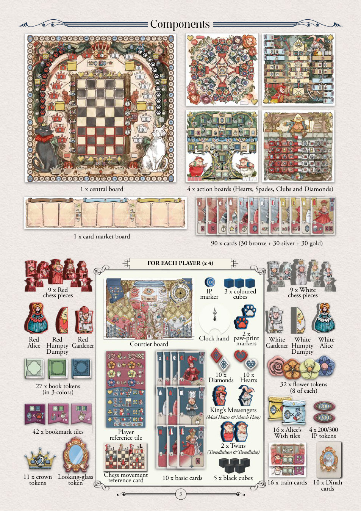
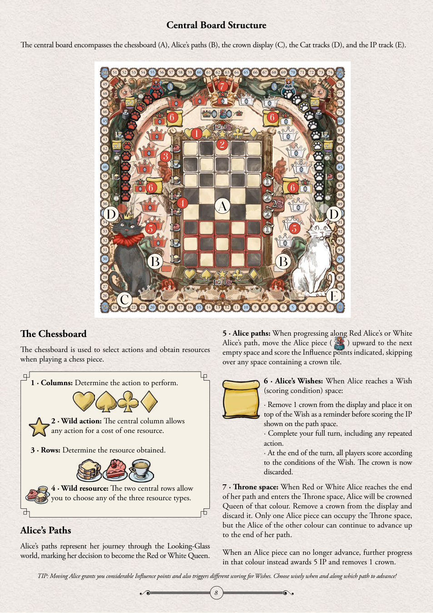
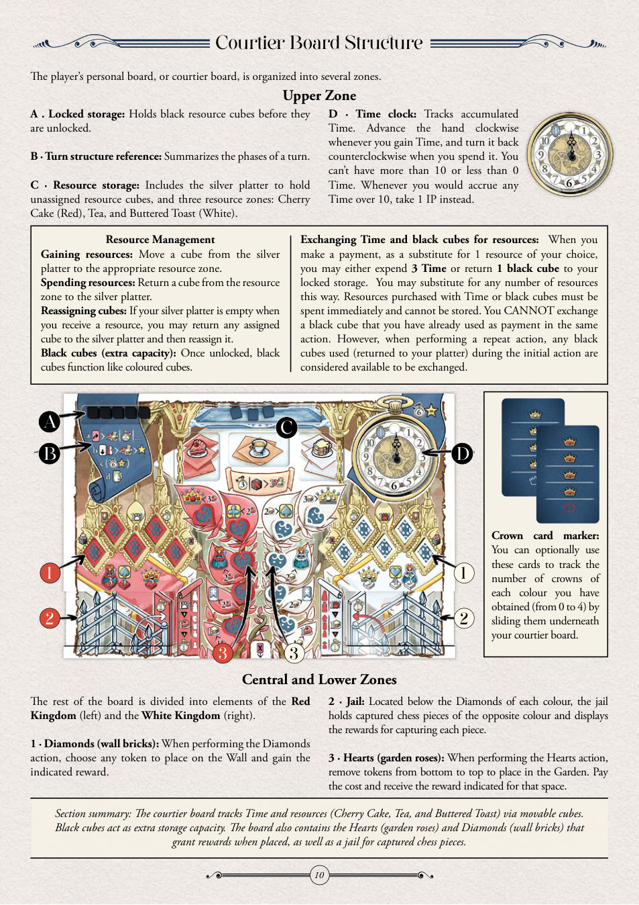
3核心引擎：卡牌、棋子与落格
3.1 卡牌的四项信息 p.7
四个层级：基础 → 铜 → 银 → 金，层级越高，奖励越强。起始牌库只有 10 张基础卡；层级更高的卡由卡牌市场购入。p.7
3.2 棋盘：5 列 × 8 行 p.8
3.3 落格结算顺序 p.11p.13
- 获取资源：棋子最终停驻格的行决定获取资源类型。普通行给予印定的那一种；落在中央两行时择一三种资源任选一种。将 1 个立方体从银盘移至对应资源区。
- 支付行动费用：普通列执行印定的行动；落在 ★ 中央列时择一四种行动任选一种，且须额外支付 1 个任意资源。费用必须在获得任何奖励之前支付。红色棋子仅可使用樱桃蛋糕和/或茶，白色棋子仅可使用黄油吐司和/或茶。
- 执行行动并结算奖励：同一个行动里获得的多个奖励，顺序由玩家选定，但须当场结算完毕，不得延至重复行动。奖励一般可放弃，爱丽丝推进与皇冠一经触发即须领取。
- 辨认黑白数字：卡面与版图上黑色数字＋图标＝费用；白色数字＋图标（或光图标无数字）＝奖励。这是原书全篇的读图语法。
3.4 打出棋子：移动与营救的择一p.11
· 兵仅移动 1 格；被阻挡时原地打出，激活当前所在格。
· 落格与对方棋子所占格重合时俘获。
· 被营救的棋子本回合不能再移动。
· 被俘来源监狱的玩家获获得 1 时间作为补偿；重生格全满时放置于任意空格。
其他特殊情形
| 情形 | 处理方式 |
|---|---|
| 按国际象棋走 | 依棋子走法提示卡。兵仅移动 1 格（无开局移动 2 格规则）。 |
| 被堵住 | 原地打出该卡，激活其当前所在格的效果。即使其他兵仍可移动，也可打出被阻挡的兵。 |
| 俘获 | 落在对方颜色棋子所占的格即俘获，置于个人版图对应监狱。无「将军」规则，王亦可被俘。奖励按被俘棋子价值累计：兵 1 时间；马/象/车 1 资源 + 1 时间；王/后 1 个被俘颜色爪印 + 1 资源 + 1 时间。 |
| 营救 | 欲打出的棋子被俘时（不论在谁的监狱），可将其放置于其颜色的任一空重生格，并以激活该格效果结束移动；被营救的棋子当回合不能再移动。被俘来源监狱的玩家获得 1 时间作为补偿。重生格全满时放置于任意空格。 |
| 兵升变 | 兵移动至最远一行 → 获得 1 个该兵颜色爪印 → 立即将兵移至自己颜色的一个重生格，并以激活这个新格（含其资源与行动）结束移动。 |
| 王的 ALL | 附录 2：打出王时，无论停驻棋盘何格，均可执行任意一种行动。p.23 |
| 不执行行动 | 跳过行动，改为获得 2 时间，直接进入休整。p.11 |
3.5 全游戏「择一」决策总表
原书将分支分述于各页。下表汇总全游戏的互斥选择：每行均为择一，不按先后顺序执行。正文中的 择一 标记均回指本表。
| 阶段 | 决策点 | 互斥选项 | 约束与后果 | 页码 |
|---|---|---|---|---|
| 回合内 | 打出棋子卡后 | A 移动棋子 / B 营救棋子 | A 依走法决定落格；B 由玩家选定重生格，当回合不再移动 | p.11 |
| 落格后 | 执行该列行动 / 跳过行动获得 2 时间 | 另一道独立择一；跳过就直接进入休整，不再有行动奖励 | p.11 | |
| 落格在中央两行 | 樱桃蛋糕 / 茶 / 黄油吐司 | 三选一，立即获取；普通行只能获取印定的那一种 | p.8 | |
| 落格在 ★ 中央列 | ♥ / ♠ / ♣ / ♦ 任一行动 | 四选一，但须额外支付 1 个任意资源；粉玫瑰 1 朵可免除该费用 | p.8p.13 | |
| 打出「王」 | 四种行动任一 | 无视落格列（附录 2 的 ALL） | p.23 | |
| 阶段 c | 支付 6 时间重复行动 / 不重复 | 可选，每回合限 1 次；同色、再付行动费用、不打卡 | p.12 | |
| 费用不足 | 支付 3 时间 / 退回 1 黑立方体，替代 1 资源 | 可按资源个数多次替代；替代所得须立即支付 | p.10 | |
| ♥ 红心 | 园丁 | 付茶移动 / 不移动 | 可选前置；移动＝更换区域＝更换可获取的奖励组 | p.14 |
| 园丁落位 | 4 个同色格 / 相邻同色格中选 1 个 | 决定园丁当前区域，即本回合可种植的片区 | p.14 | |
| 种玫瑰 | 园丁当前区域内任选 1 个空格 | 取得被覆盖格的奖励；空格随占位递减 | p.14 | |
| 取红心 | 严格取「编号最小」的一枚 | 此项为强制顺序，非择一（迷你行动则是任一色最小的一枚） | p.14 | |
| ♠ 黑桃 | 信使步数 | 前进 1 / 2 / 3 格 | 费用不同；只结算落格奖励，步数决定落格 | p.15 |
| 路径岔路 | 左 / 右 | 部分格可自行选择行进方向 | p.15 | |
| 卡牌奖励 | 购卡 / 邀请 | 二选一；前者增加牌库卡牌，后者减少卡牌并折算终局 IP | p.15 | |
| 邀请来源 | 手牌 / 弃牌堆 | 二选一；不得使手牌在打牌前清空、不得使手牌与牌库合计少于 3 | p.7 | |
| 购卡格位 | 市场左 / 中 / 右格（并在允许层级内） | 费用依次免费 / 1 时间 / 1 自选资源 | p.9 | |
| ♣ 梅花 | 双子路径 | 任一相邻箭头路径（黄 / 黑箭头） | 最多穿过 1 个箭头；黄箭头按双子颜色收费，黑箭头统一收费 | p.16 |
| 购买书签 | 检视全部可用书签后任选 1 枚 | 即时 / 每回合 / 终局计分三类，效果各异 | p.16 | |
| ♦ 方块 | 墙格 | 与所打棋子颜色匹配的一侧任选 1 格 | 付行费用 + 列费用；但砖必须放该列最低空位，可选列因此受限 | p.17 |
| 取方块 | 朝臣版图任选 1 枚方块标记 | 获取该格印制的奖励，与墙上盖住的奖励是两份 | p.17 | |
| 跨行动 / 全局 | 迷你行动 | 任一颜色、对应版图上的一次迷你行动 | 无颜色限制，红棋触发亦可作用于白色一侧，可跨版图形成连锁 | p.13 |
| 营救 / 兵升变 | 任一空的重生格 | 择一，并以激活该格结束移动 | p.11 | |
| 终局心愿（猫轨 ×1~×2） | 该色两个心愿中自选 1 个 | 超过 ×2 才两个都计；未到 ×1 一个都不计 | p.19 | |
| 设置 · 车票卡 | 2 张选定 1 张，再选定红面 / 白面 | 第一局可直接分发带星号的 4 张代替 | p.6 |
对照原书页图：卡牌结构（p.7）／回合与移动（p.11）／行动总则（p.13）
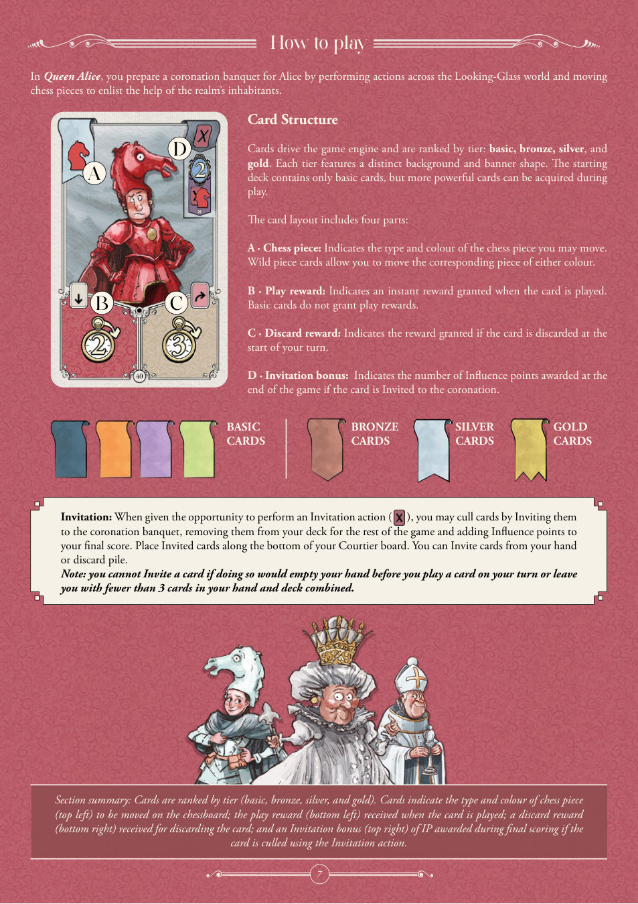
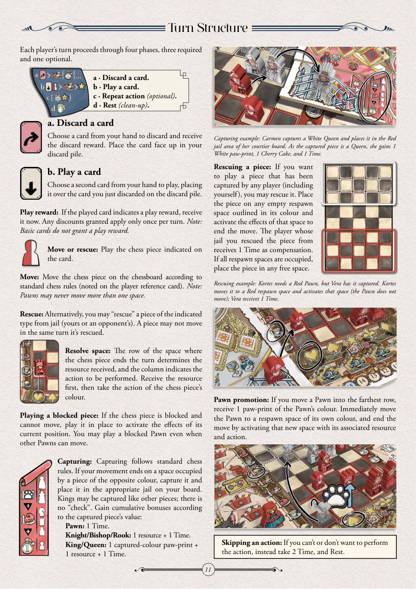
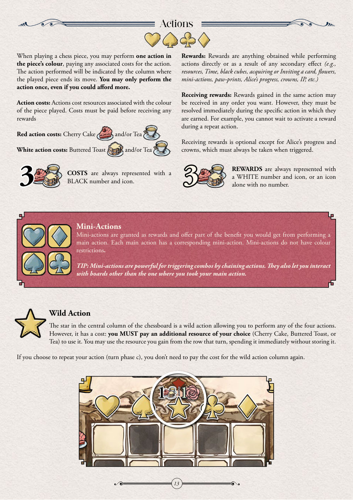
4回合的四个阶段
每回合依次经过 a → b → c → d，其中 a、b、d 必须执行，c 可选。p.11p.12
| 阶段 | 操作 | 执行要点 |
|---|---|---|
| a 弃牌 | 从手牌弃 1 张，获取其弃除奖励。 | 基础卡也有弃除奖励。弃除的牌面朝上置入弃牌堆。p.11 |
| b 打牌 | 再选定 1 张打出，叠放于刚弃除的牌之上；获取打出奖励；择一移动 / 营救（见 §3.4，二选一）；结算落格；落格后再择一执行该列行动 / 跳过并获得 2 时间。 | 基础卡没有打出奖励；打出奖励里的折扣每回合只生效一次。p.7p.11 |
| c 重复 | 支付 6 时间，重复刚执行的行动。 | 每回合限 1 次；必须同色；再次支付行动费用；不打出新卡；通用列那 1 个附加资源无须再次支付。p.12p.13 |
| d 休整 | ① 补充或弃除至手牌上限（通常 3）② 市场左滑补位 ③ 用过的每回合书签翻回 ④ 若本回合爱丽丝进入心愿格，全体玩家结算该心愿。 | 牌库耗尽时洗弃牌堆重组。结算心愿前确认陈列区已移除 1 个皇冠。p.12 |
5四类行动
四类行动共用同一结构：触发（落在对应列）→ 支付（按棋子颜色）→ 按固定步骤执行 → 结算奖励 → 检查里程碑 → 终点授予皇冠。差异见 §5.1–5.4。p.13
5.0 行动的共同结构与格子差异
各版图格子差异
| 位置 | 差异项 | 影响 | 页码 |
|---|---|---|---|
| 棋盘 5×8 格 | 行＝资源种类，列＝行动种类；中央两行是百搭资源行、中央 ★ 列是通用行动列；格子亦可能被对方棋子占据 | 决定本回合所得资源与所执行的行动；落在对方格触发俘获 | p.8p.11p.13 |
| 花园格 | 各格印制奖励不同：四种花（黄 / 蓝 / 橙 / 粉）以及爪印、书、卡等非花图标；并分属 4 个区域 | 园丁当前区域决定可覆盖的格子，进而决定所得永久加成的种类 | p.14 |
| 朝臣版图 红心 / 方块格 | 每枚标记所在格印的奖励不同（银卡、爪印、时间、爱丽丝推进、迷你行动等均可能出现） | 移除的标记决定所得奖励；红心须取走编号最小者，方块允许任选 | p.14p.17 |
| 信使路径格 | 格奖励各不相同；格后横幅颜色代表可购卡层级（铜 / 银 / 金）；另有印章格、中央金区、岔路、终点等特殊格 | 步数决定落格；首位越过印章与后续玩家所得奖励不同 | p.15 |
| 双子之树格 | 印的书本颜色与其他奖励不同、高度不同（标在格下方的书签图标内）；部分格上还放着实体书本标记 | 高度触发里程碑；实体书本标记被取走后，同一格后续到访获得的奖励会变 | p.16 |
| 矮胖子墙格 | 左红右白各成一片；每格印不同奖励；每行费用不同（印在行首），部分列另加 1 茶 | 格位同时决定费用与所得奖励；与矮胖子同一行另有额外 IP | p.17 |
| 爱丽丝路径格 | 每格印不同 IP 数值；心愿格、王座格、被皇冠占住的格是特殊格 | 推进所至之格决定即时 IP、是否触发全体心愿、是否加冕；有皇冠的格须跳过 | p.8p.9 |
| 猫咪轨道格 | 沿途每格印不同奖励，×1 / ×2 是阈值格 | 落格与跳过的所有格均给予奖励；终局位置决定可计入的心愿数量 | p.9p.19 |
| 卡牌市场格 | 铜 / 银 / 金三层 × 左中右三格，费用依次免费 / 1 时间 / 1 自选资源 | 同一层级内格位决定成本；最右格为牌库顶牌 | p.9 |
| 行动 | 费用 | 产出 | 里程碑（按每色各自计） | 迷你行动 |
|---|---|---|---|---|
| ♥ 红心 | 园丁移动 1 茶/格；放红心的费用（樱桃蛋糕 / 黄油吐司） | 花（永久加成）、版图与花园两处奖励 | 第 3 枚 → 爱丽丝 1 格 第 4 枚 → 迷你行动 第 5 枚 → 皇冠 | 免费移除任一色编号最小的红心，获得翻出的奖励，标记置于一旁 |
| ♠ 黑桃 | 1 格 = 1 资源；2 格 = 2 资源；3 格 = 2 资源 + 1 茶 | 购卡或邀请、落格奖励、印章奖励 | 首次越过印章获得大印章奖励，后续获得小印章奖励；进入中央金区 ≥1 次即推进爱丽丝；穿越中央给予免费迷你行动；路径终点授予皇冠 | 任一信使免费前进恰好 1 格，照常获得全部奖励 |
| ♣ 梅花 | 箭头标示的费用（黄箭头分红白两色，黑箭头统一） | 书本、可选购书签 | 从第 2 层爬到第 3 层 → 对应色爱丽丝 1 格；树顶授予皇冠 | 任一双子沿相邻黑箭头免费移动，照常获得奖励 + 可购买书签 |
| ♦ 方块 | 所选行费用 + 列费用（部分列另需 1 茶） | 版图奖励 + 墙上被盖住的奖励 + IP | 第 3 枚 → 爱丽丝 1 格 第 4 枚 → 迷你行动 第 5 枚 → 皇冠 | 免费移除任一色 1 枚方块，获得图示奖励，不放置于墙上 |
p.14p.15p.16p.17
5.1 ♥ 红心 · 百花花园 p.14
规则另规定：红心只能种在园丁当前所在区域的一个空格上，获得的是被其覆盖格的奖励。移动园丁即以茶更换奖励池：相邻格 1 茶、正对面 2 茶；不移动则不支付茶，并接受当前区域的剩余奖励。
从休息位进花园免费，且可放置于与其颜色匹配的 4 个格中的任意一个，据此可在每轮重新选定区域。区域内空格随红心覆盖而减少；区域填满后园丁返回休息位，占位顺序构成竞争。
- 移动园丁（可选，择一）：先决定移动 / 不移动；移动时再选定一个目标格——令对应色园丁移至该颜色的相邻格，每次 1 茶，移至正对面需 2 茶。从休息位进花园免费，可放置于该色 4 个格中的任意一个。
此步骤决定本回合可种植的片区及所得花的种类。 - 放一枚红心（不是择一）：从朝臣版图取走对应色编号最小的那枚红心标记（强制顺序，不能挑选），支付它标示的费用（樱桃蛋糕或黄油吐司），获得该标记原来那一格印的奖励。各红心格的奖励亦不同，但只可取走编号最小者，该奖励由固定顺序决定，不供选择。
- 种玫瑰丛（择一）：在园丁当前区域里任选一个空位放置红心，获得被其覆盖的奖励（多数是花）。花提供永久加成，可置于提示板块以便查核。
此为本行动第二份奖励，由所选格位决定；与前一份来源不同，须分别结算。 - 检查里程碑与园丁休息：按颜色分别计算已放置的红心数（3 / 4 / 5 见上表）；若园丁所在区域已无空格，园丁返回休息位。
5.2 ♠ 黑桃 · 国王信使 p.15
而规则仅给予落格的奖励，途经格一律不获取。步数费用用于选定落点：支付越多，越过的格子越多，落格奖励随之改变。
印章还分「首个通过的玩家获得大印章 / 后续玩家获得小印章」，同一格对先手和后手价值不同；终点授予对应色皇冠，为该路径的终点奖励。
| 移动格数 | 红信使（疯帽匠） | 白信使（三月兔） |
|---|---|---|
| 1 格 | 1 樱桃蛋糕 | 1 黄油吐司 |
| 2 格 | 2 樱桃蛋糕 | 2 黄油吐司 |
| 3 格 | 2 樱桃蛋糕 + 1 茶 | 2 黄油吐司 + 1 茶 |
- 付费并前进（择一）：在 1 / 2 / 3 格中选定一个步数并支付对应费用；遇到岔路再择一选定左或右。部分格设有岔路，同一格可由多名玩家占据。
步数决定落格，途经格不给予奖励。 - 只获取落格的奖励（不获取途经格），外加该格的卡牌奖励。
- 卡牌奖励（择一）：于购卡与邀请中择一，见下表。
- 检查里程碑：经过带印章的箭头时，首位到达的玩家获得大印章里的全部奖励，后续玩家获得小印章里的全部奖励；进入中央金区至少给予 1 次爱丽丝推进；穿越中央给予 1 个免费迷你行动；抵达路径终点授予对应颜色的皇冠。
作用：扩充牌库。
作用：精简牌库并累积终局声望。
5.3 ♣ 梅花 · 双子之树 p.16
实体书本标记为一次性资源：首位落在置有实体书本标记的格上的玩家获得 2 本；书本标记被取走后，后续到访者获得 1 本 + 另一个印制奖励，而且被实体书盖住的那份印制奖励不能获得。路径选择同时决定费用与该格剩余奖励。
高度本身是里程碑：从第 2 层爬到第 3 层推进对应色爱丽丝、树顶授予对应色皇冠。费用依所移动双子的颜色而定（黄箭头分色、黑箭头统一）。
- 选定路径并付费（择一）：在相邻的箭头路径中选定一条，让对应色双子沿箭头移动，最多穿过 1 个箭头。黄色箭头标示两种费用（红双子支付樱桃蛋糕 / 白双子支付黄油吐司）；黑色箭头仅标示一种费用，不分红白。
- 结算落格奖励：取走落格上所有实体书本标记；若该格印有书本，再获得 1 本（印多色时任选一色），并可获得其他印制奖励。但被实体书本标记盖住的印制奖励不能获得。因此首位到访置有实体书本标记之格的玩家会获得 2 本书；标记被取走后到访该格的后续玩家获得 1 本书 + 另一个印制奖励。
- 可选购书签（择一）：以书本购买 1 枚书签，可先检视全部可用书签再任选 1 枚。书签分即时 / 每回合 / 终局计分三类，效果各异。格子高度印制于其下方的书签图标内；多个棋子可同格。
- 检查里程碑：从第 2 层爬到第 3 层时，对应色爱丽丝前进 1 格；任一双子抵达树顶，授予对应颜色的皇冠。
5.4 ♦ 方块 · 矮胖子之墙 p.17
格位同时决定三项：支付费用（行费用 + 列费用）、获取奖励（墙上被盖住的那份奖励）、位置分判定（与矮胖子半身件同一行获得 2 IP；砌满其所在那一行获得 4 IP 并令其上移一行）。
放置规则构成约束：砖必须放在所选列的最低空位。实际选定的是列，行由该列已堆叠的高度决定；堆叠越高，可选行越少。同层奖励与整行完成奖励即据此设置。
- 选格并付费（择一）：在与所打棋子颜色匹配的一侧任选一格；同时支付该格的行费用 + 列费用。所有行都有费用；其中两列各另需 1 茶（格上有小图标提示），另两列无附加费用。
- 放置规则：砖必须放在所选列的最低空位；砖不必与矮胖子半身件在同一行。
- 取方块（择一）：从朝臣版图任选 1 枚方块标记移除，获得它那格印的奖励。此为本行动第一份奖励，可选择；红心则须取编号最小者。
- 放置砖块：将砖放置于墙上选定格，获得被覆盖的奖励。第二份奖励由格位决定。一次方块行动共结算两份奖励。
- 结算 IP 与里程碑：与对应矮胖子半身件同一行砌砖获得 2 IP；若你的砖砌满矮胖子所在那一行，将半身件上移一行，改为获得 4 IP。按颜色计算已放置方块（3 / 4 / 5），给予爱丽丝推进 / 迷你行动 / 皇冠。
对照原书页图：四大行动各一页（p.14–p.17）
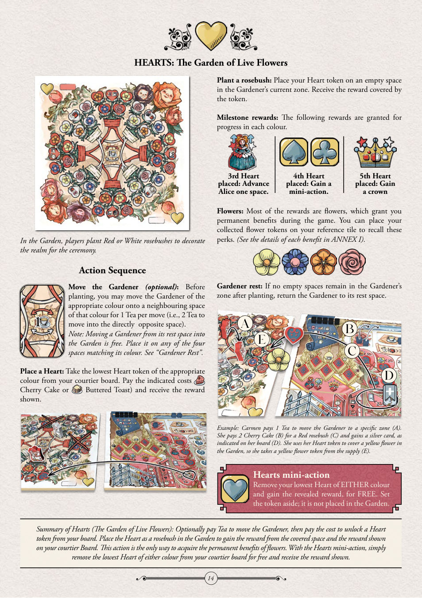
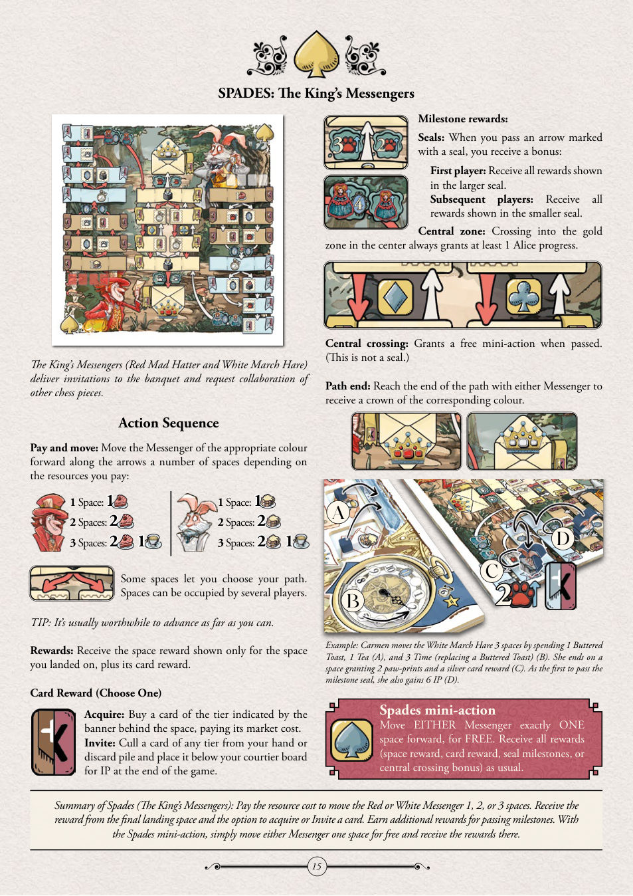
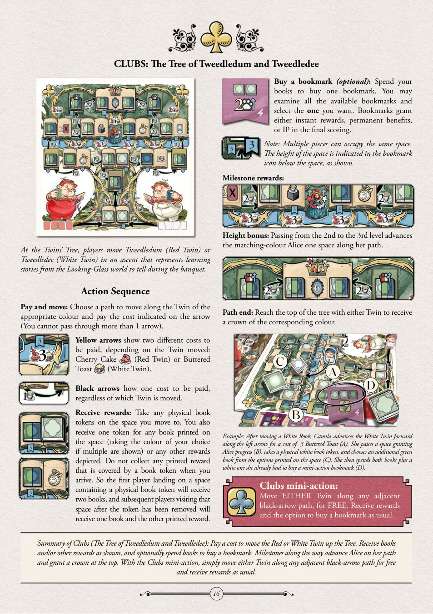
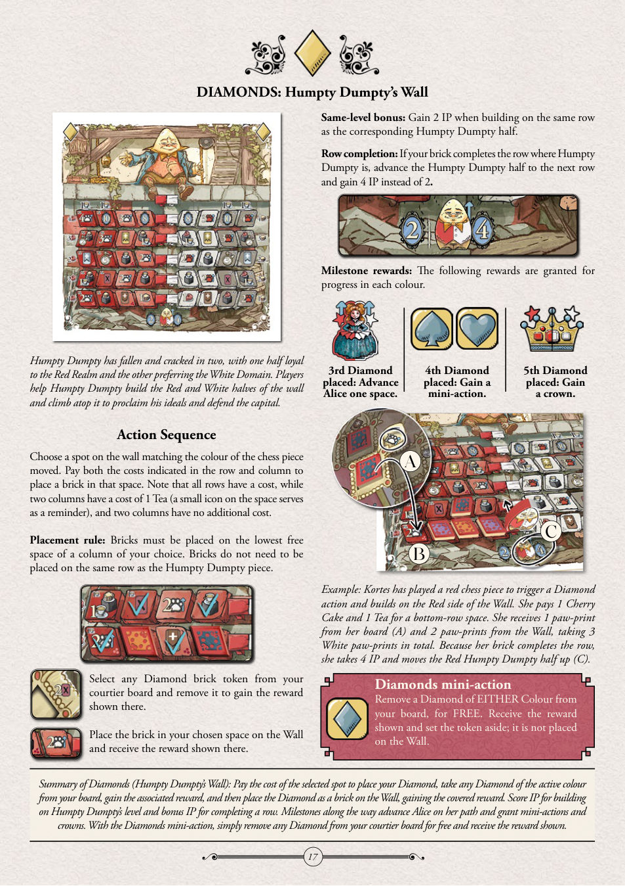
6贯穿全局的四条线
以下四项由各类行动共同触发，贯穿全局：爱丽丝路径与心愿、皇冠、猫咪轨道、卡牌市场。
6.1 爱丽丝的两条路径与「心愿」p.8p.12
- 普通推进：将红或白爱丽丝棋子向上移至下一个空格，获得该格标示的 IP；跳过任何放有皇冠的格子。
- 进入心愿格（计分条件）：① 先从陈列区移除 1 个皇冠，放置于心愿格作为提醒 → ② 结算路径格上的 IP → ③ 完成整个回合，包括可选的重复行动 → ④ 回合结束时（休整阶段）所有玩家按该心愿的条件计分 → ⑤ 皇冠弃除。
- 王座格：某色爱丽丝抵达路径终点并进入王座格，爱丽丝以该色加冕；移除并弃除 1 个皇冠。王座格只能被一个爱丽丝占据，另一色仍可继续推进至自身路径终点。
- 无法推进：某色爱丽丝已无法再推进时，该颜色的后续推进改为获得 5 IP + 移除 1 个皇冠。
6.2 皇冠的三重作用 p.9
原书两处并列，照录不裁定：p.9「皇冠奖励」段先写「路径无空格或陈列区已空 → 改获得 10 IP」，紧接着又写「路径已满但陈列区仍有皇冠 → 移除并弃除 1 个 + 10 IP」。两句在「陈列区是否还有皇冠」上口径不完全一致，图 4 与上文并列呈现两条，对局以版图状态与出版方裁定为准。
6.3 猫咪轨道：终局心愿计数上限 p.9p.19
获得爪印时，沿对应红 / 白猫轨道前进标记，获得落格以及跳过的所有格子的奖励；多个标记可共用一格。
| 你的标记位置 | 终局该颜色的心愿 |
|---|---|
| 未到 ×1 | 均不计分 |
| ×1 与 ×2 之间 | 择一该色两个心愿中自选 1 个计分 |
| 超过 ×2 | 该色两个心愿都计分 |
6.4 卡牌市场与「邀请」共同构成引擎 p.7p.9
市场负责增加卡牌（黑桃的购卡、车票卡的赠卡），邀请负责减少卡牌（把弱基础卡移出牌库并折成终局 IP）。一增一减，牌库中高阶卡的比例随之提高。
- 市场每层 3 格，费用依次是免费 / 1 时间 / 1 个自选资源；最右格是该层牌库顶牌。p.9
- 购入的卡直接加入手牌、可立即使用；市场仅在休整阶段将卡左滑补充空位。p.9
- 邀请可从手牌或弃牌堆裁除任意层级的卡，放置于朝臣版图下方；限制见 5.2。p.7
- 持有两朵黄花后，购卡可跨层级：每升一层支付 1 时间、每降一层获得 1 时间；先选定层级并结清时间，再支付购卡费用。p.22
6.5 16 种「爱丽丝的心愿」速查 p.25
每局随机用 4 块（按图标四类各抽 1）。起始面为黄色；加冕颜色的心愿在终局翻至白金面，数值更高。所有条件均按自己版图/版图上的进度计算，红白加总或配对时按说明。
| # | 计分条件 | 起始 | 白金 |
|---|---|---|---|
| 1 | 你移除的每枚红心（红白加总） | 2 IP | 4 IP |
| 2 | 你的双子移动的每一步（红白加总，取各双子所在格底部数字） | 3 IP | 6 IP |
| 3 | 你移除的每枚方块（红白加总） | 2 IP | 4 IP |
| 4 | 你的信使移动的每一步（红白加总） | 1 IP | 2 IP |
| 5 | 你的每对红白红心（已移除） | 5 IP | 9 IP |
| 6 | 红白双子配对同步走的每一步 | 7 IP | 12 IP |
| 7 | 红白信使配对同步走的每一步 | 2 IP | 4 IP |
| 8 | 你的每对红白方块（已移除） | 5 IP | 9 IP |
| 9 | 你的每对同类型花 | 7 IP | 12 IP |
| 10 | 每本书：未支付的剩余书本 + 你拥有书签上印的书本数（上限 20 本） | 1 IP | 2 IP |
| 11 | 信使抵达的每个铜区与金区格（红白加总） | 2 IP | 3 IP |
| 12 | 你放置于矮胖子所在层或以下的每枚方块（红白加总） | 3 IP | 5 IP |
| 13 | 每 3 朵不同类型的花 | 11 IP | 16 IP |
| 14 | 你拥有的每枚即时或每回合书签 | 3 IP | 5 IP |
| 15 | 你越过的每个印章 | 5 IP | 8 IP |
| 16 | 墙的每一条含有你方块的列（红白加总） | 3 IP | 5 IP |
对照原书页图：皇冠 / 猫轨 / 市场（p.9）、心愿（p.25）、书签（p.24）
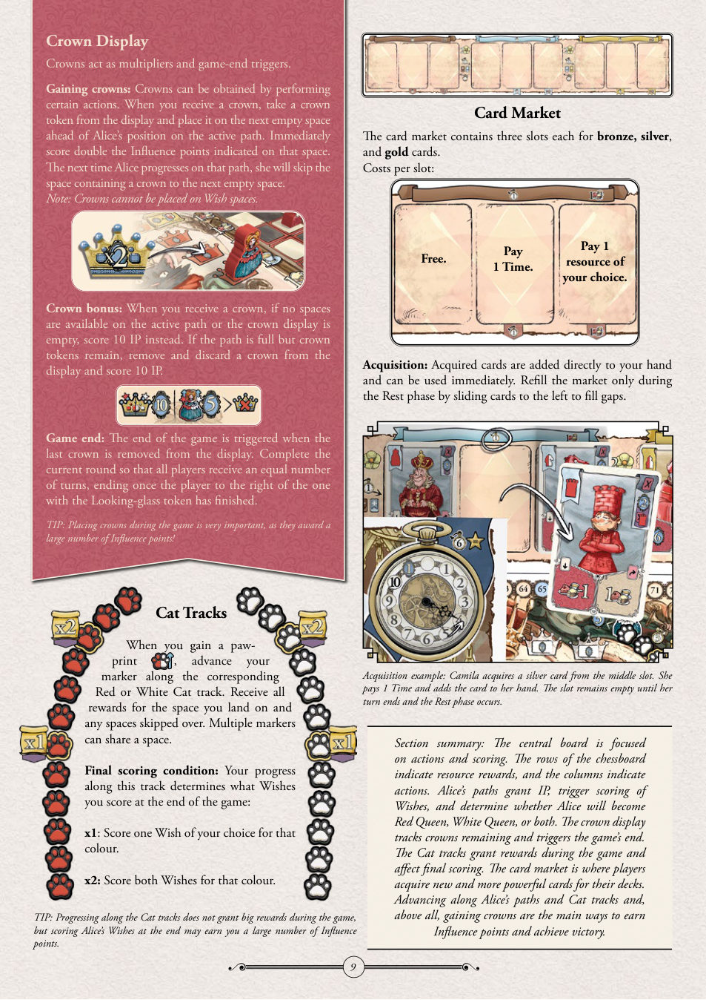
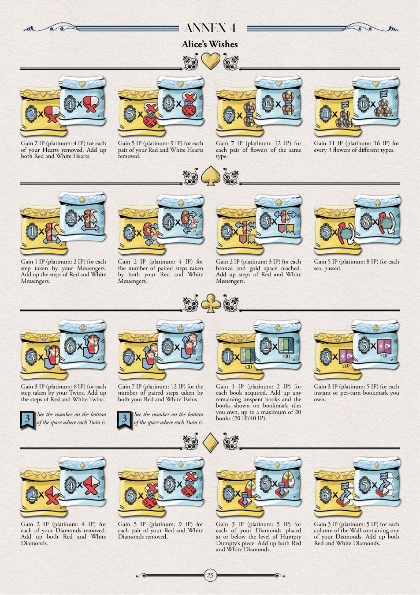
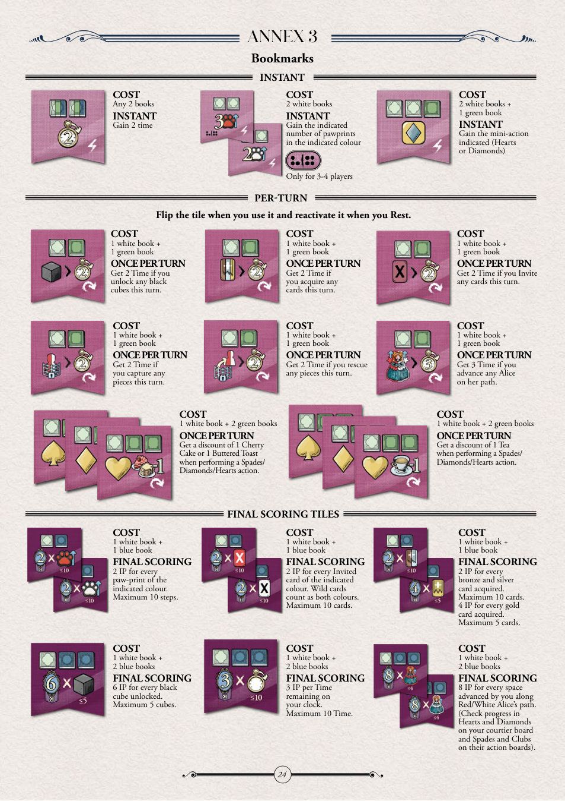
7资源与时间：支付、替代与上限
7.1 三种资源与银盘 p.10
| 资源 | 阵营 | 用途 |
|---|---|---|
| 樱桃蛋糕 | 红 | 红色棋子触发的行动费用 |
| 黄油吐司 | 白 | 白色棋子触发的行动费用 |
| 茶 | 通用 | 红白两方均可使用；园丁移动、部分行动附加费、3 格移动费 |
- 获取资源＝将 1 个立方体从银盘移至对应资源区；花费资源＝将立方体从资源区放回银盘。
- 银盘已空仍需获取资源：可将任意一个已分配的立方体退回银盘，再重新分配。
- 黑色立方体（额外容量）：起始 5 个放置于上锁储藏区；解锁后功能等同玩家色立方体。解锁与分配本身常作为奖励出现。p.10
7.2 时间时钟 p.10
7.3 资源不足时的两种替代（择一）p.10
每替代 1 个资源，于下列两种方式中择一；可替代任意数量的资源，每次分别选择。两种方式不得并用。
| 替代方式 | 规则 |
|---|---|
| 支付 3 时间 | 可替代 1 个自选资源；可按此方式替代任意数量的资源。 |
| 退回 1 个黑立方体 | 将 1 个已解锁的黑立方体放回上锁储藏区，替代 1 个自选资源；同样可替代任意数量。 |
7.4 会改动上述数字的永久加成（花）p.22
| 花 | 1 朵 | 2 朵 |
|---|---|---|
| 粉玫瑰 | 免费使用棋盘上的通用行动列（★ 不再多支付 1 资源） | 打出的棋子停在棋盘中央行时，除资源外再获得标示数量的时间 |
| 黄花 | 手牌上限永久提高到 5 | 购卡可跨层级：升一层支付 1 时间 / 降一层获得 1 时间 |
| 蓝花 | 以时间购买资源的费用 3 → 2 时间 | 可用 1 茶兑换 2 时间，次数不限 |
| 橙花 | 重复行动费用 6 → 5 时间 | 重复行动的费用再减免 1 个任意资源 |
同类型第 2 朵提升加成；超过 2 朵不再额外受益。书签亦提供折扣（如执行黑桃/方块/红心行动减免 1 樱桃蛋糕、1 黄油吐司或 1 茶），全表见原书 p.24。
7.5 迷你行动的作用 p.13p.18
迷你行动提供主行动的部分收益，作为奖励发放，不受颜色限制：红色棋子触发时可作用于白色一侧版图，因而可跨版图形成连锁。原书 p.18 示例中，红心行动所得的梅花迷你行动将白双子推至树顶并取得皇冠。p.18
对照原书页图：朝臣版图与资源管理（p.10）、花（p.22）、符号表（p.27）
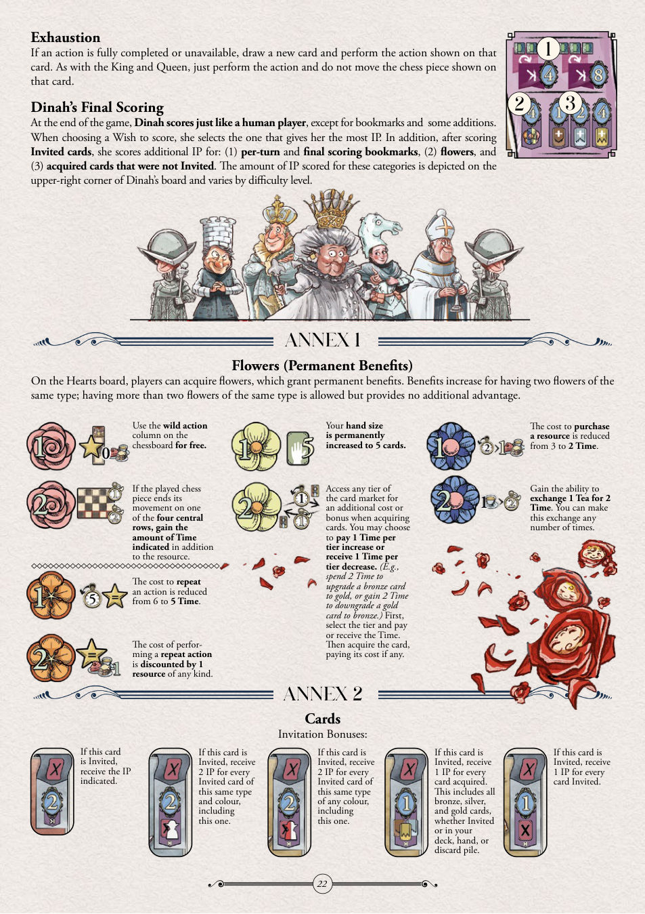
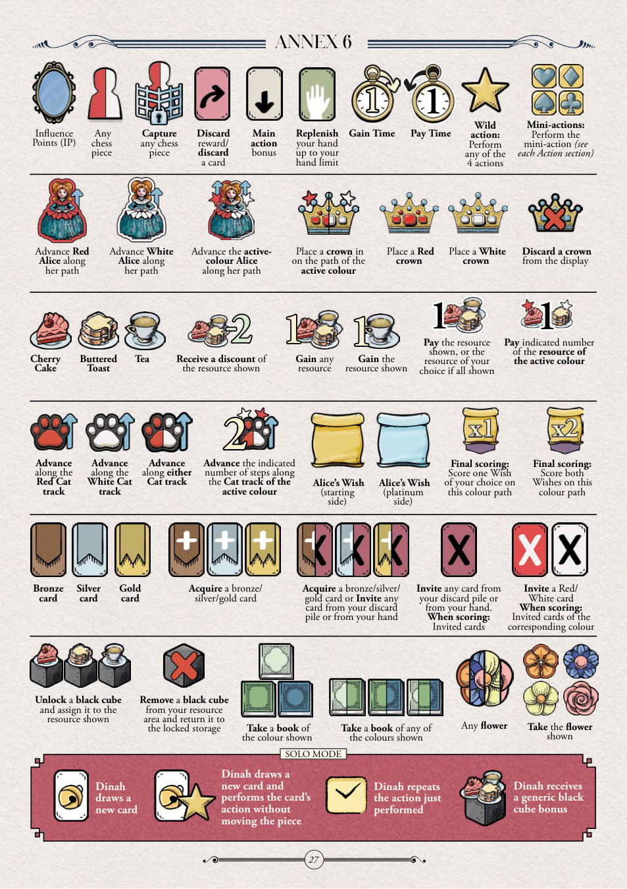
8终局与计分链路
8.1 触发与收尾 p.9p.19
陈列区最后一枚皇冠被移除 → 触发结束 → 完成当前轮，保证每人回合数相同，直到持有镜子标记玩家右侧的那位完成回合，此时进入计分。
8.2 计分固定四步 p.19
8.3 终局计分示例：Vera 的 100 IPp.19
| 步 | 条件与计算 | 得分 | 依据 |
|---|---|---|---|
| ① | 加冕为红女王；Vera 有 2 个红皇冠、1 个白皇冠 | 16 IP | 只有获胜色皇冠计分：2 × 8 = 16；白皇冠不计。同时红心愿翻白金面。 |
| ② | 红白猫轨均通过 ×1、均未到达 ×2 → 每色各选 1 个心愿；她选方块心愿（已翻白金）与双子心愿 | — | 介于 ×1 与 ×2 之间 = 自选 1 个。 |
| ②a | 方块心愿（白金）：10 枚方块 × 4 IP | 40 IP | 白金面每枚移除的方块 4 IP。 |
| ②b | 双子心愿：白双子第 4 层 + 红双子第 2 层 = 6 层 × 3 IP | 18 IP | 每层 3 IP，红白加总。 |
| ③a | 2 张基础兵卡，各 1 IP | 2 IP | 固定 IP 型邀请奖励。 |
| ③b | 1 张银色白兵：每邀请 1 张白兵（含自身）2 IP；共 3 张白兵 + 1 张百搭兵 = 4 张 | 8 IP | 百搭兵可计为白色。 |
| ③c | 1 张金兵：每邀请 1 张任意色兵 2 IP；共 5 张兵 | 10 IP | 不限颜色。 |
| ③d | 1 张金兵：固定 6 IP | 6 IP | 固定 IP 型。 |
| 合计 | 16 + 40 + 18 + 2 + 8 + 10 + 6 | 100 IP | 受邀卡小计 26 IP，前两段小计 74 IP。 |
对照原书页图：游戏结束与终局计分示例（p.19）、卡牌邀请奖励（p.23）
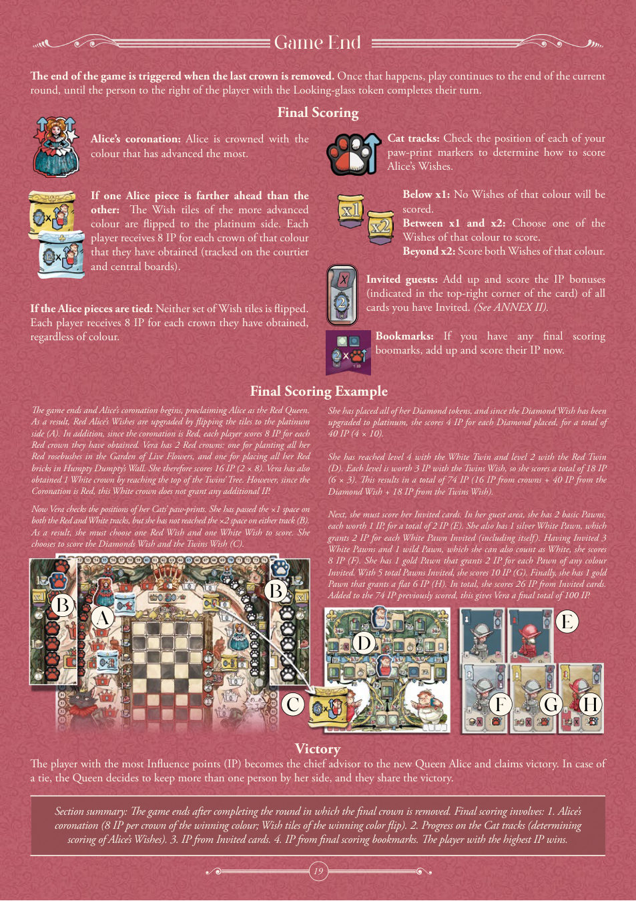
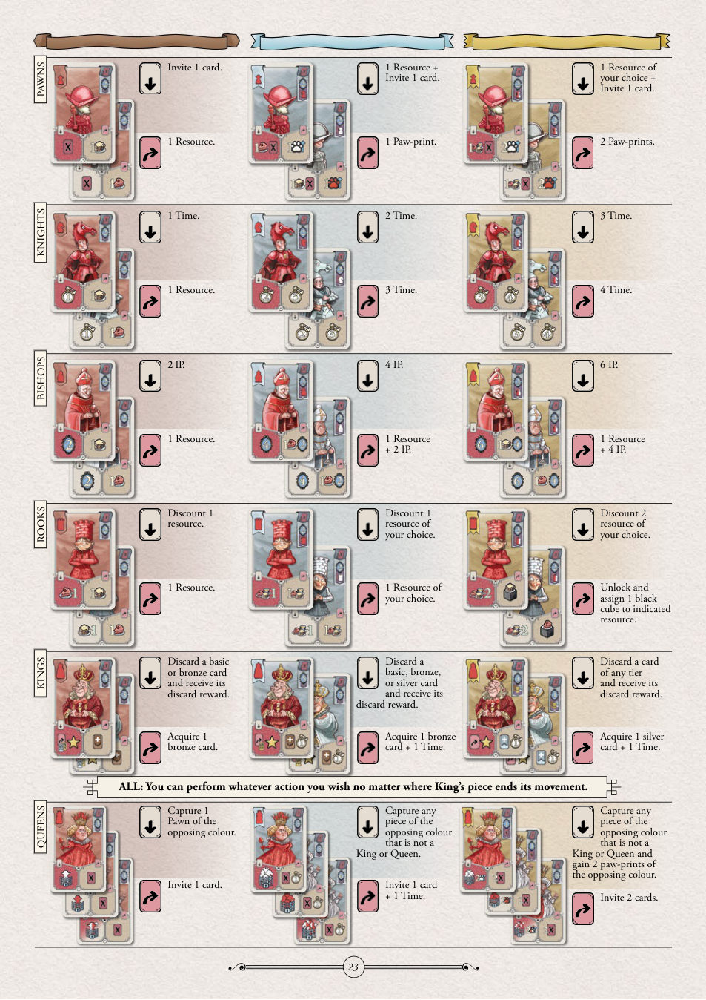
9常见误读（29 条）
- 弃牌和打牌是两张不同的卡；打出的那张叠在刚弃除的那张之上。p.11
- 基础卡没有打出奖励，但有弃除奖励。p.7
- 兵仅移动 1 格，无国际象棋的开局移动 2 格规则。p.11
- 本游戏不设「将军」，国王可被俘获。p.11
- 被营救的棋子当回合不能移动；从其他玩家监狱营救棋子，该玩家获得 1 时间。p.11
- 落格结算是先获取资源、再执行行动；行动按棋子的颜色执行，不是按格子的颜色。p.11p.13
- 黑色数字＝费用（先支付、在获取奖励之前），白色数字或无数字图标＝奖励。p.13
- 同一行动里的多个奖励可按任意顺序领取，但须当场结算完毕，不得延至重复行动。p.13
- 奖励一般可放弃，但爱丽丝推进与皇冠一旦触发必须领取。p.13
- 落在 ★ 通用行动列须额外支付 1 个任意资源；但重复行动时无须再次支付该费用。p.13
- 迷你行动不受颜色限制，红棋触发亦可作用于白色一侧版图。p.13p.18
- 重复行动：每回合限 1 次、6 时间、须同色、再次支付行动费用、不打出新卡。p.12
- 邀请有两个限制：不得使手牌在打牌之前清空，也不得使手牌 + 牌库合计少于 3 张。p.7
- 卡牌市场仅在休整阶段补位；但购入的卡直接加入手牌、可立即使用。p.9
- 皇冠不能放置于心愿格；放置后立即获得该格 IP 的 2 倍，之后爱丽丝推进会跳过它。p.9
- 心愿是全体玩家在触发者回合结束时共同计分，非触发者独享。p.8p.12
- 猫咪轨道要获取落格 + 跳过的所有格奖励；黑桃信使则仅获取落格奖励。p.9p.15
- 梅花：被实体书本标记盖住的印制奖励不能获得，所以首位到访与后续到访获得的奖励不同。p.16
- 方块的砖必须放在所选列的最低空位，且不必与矮胖子半身件同行。p.17
- 用时间 / 黑立方体换来的资源必须立即支付，不能储存；同一次行动里已用于支付的黑立方体不得再次兑换。p.10
- 时间上限 10、下限 0；溢出部分改为获得 IP。p.10
- 打出王时无视落格列，可执行任意一种行动（附录 2 的 ALL）。p.23
- 终局并非即时中止：须完成当前轮次，直到镜子标记持有者右侧玩家完成回合。p.9p.19
- 里程碑（第 3/4/5 枚红心、方块）是红白各自分别累计；终点授予的皇冠亦带颜色，终局仅计加冕色。p.14p.17p.19
- 走子和营救是择一，不是先后两步。选择营救后不能再移动这枚棋子；也不能先移动再营救。两个分支均结束于「激活一个格」，之后照常获取资源、执行行动。p.11
- 红心须取走编号最小的那一枚，是强制顺序不是挑选；方块才允许从朝臣版图任选一枚。p.14p.17
- 一次红心 / 方块行动给予两份奖励：朝臣版图「取走标记」的一份 ＋ 花园 / 墙上「被盖住格子」的一份。两者须分别结算。p.14p.17
- 移动园丁不是必须执行的步骤，该步骤以花茶换取更换区域与奖励池的权利；不移动时仅可在园丁当前区域种植。各花园格印制奖励不同，先放置者占用格位。p.14
- 黑桃的购卡 / 邀请是择一，同一次行动不得并取；信使仅结算落格奖励，途经格不计，步数决定落格。p.15
10回合示例 p.18
原书 p.18 给出两个回合示例，下表按「步骤 / 支付 / 所得 / 依据」列示。
示例 A · 推进爱丽丝并触发心愿
| 步 | 动作 | 支付 | 所得 | 依据 |
|---|---|---|---|---|
| a | 弃除 1 张白兵卡 | — | 1 时间 | 弃除奖励 p.11 |
| b1 | 打出并移动 1 枚红马，停在 ♥ 红心列 | — | 该行的 1 樱桃蛋糕 | 行 → 资源 p.11 |
| b2 | 执行红心行动：择一选定不移动园丁（不支付茶，接受当前区域的奖励池），再放置 1 枚红心 | 2 樱桃蛋糕 | 版图格的红爱丽丝推进 + 盖住的蓝花（花园格奖励，两份奖励） | p.14 |
| b3 | 红爱丽丝前进 1 格 | — | 下一格有皇冠 → 跳过；落至再下一格获得 8 IP | 跳过皇冠格 p.8 |
| b4 | 该格是心愿格 | 从陈列区移除 1 皇冠放置于其上 | 回合结束时全体结算该心愿，皇冠随后弃除 | p.8p.12 |
| c | 时间不足，不重复行动 | — | — | p.12 |
| d | 休整：补充手牌、补充市场、翻回书签、结算心愿 | — | 全体玩家按心愿计分 | p.12 |
示例 B · 迷你行动衔接 + 皇冠倍分
| 步 | 动作 | 支付 | 所得 | 依据 |
|---|---|---|---|---|
| a | 弃除 1 张银色白象卡 | — | 1 樱桃蛋糕 + 2 IP | 弃除奖励 p.23 |
| b1 | 打出并移动红马到 ♥ 列 | — | 1 樱桃蛋糕 | p.11 |
| b2 | 支付 2 樱桃蛋糕放置 1 枚红心，覆盖蓝花格 | 2 樱桃蛋糕 | 蓝花 + 该红心格翻出的梅花迷你行动 | p.14 |
| b3 | 以迷你行动沿黑色路径移动白双子（迷你行动不限色） | — | 抵达树顶 → 获得 1 皇冠 + 3 本书；以 2 蓝 + 1 白书即时兑换 1 枚终局计分书签 | p.16p.13 |
| b4 | 将皇冠放置于白爱丽丝路径 | 从陈列区取走 1 皇冠 | 下一格是心愿格（不得放置）、再下一格已有皇冠 → 放置于第三格，获得该格 IP 的 2 倍：7 × 2 = 14 IP | p.9 |
对照原书页图：回合示例（p.18）
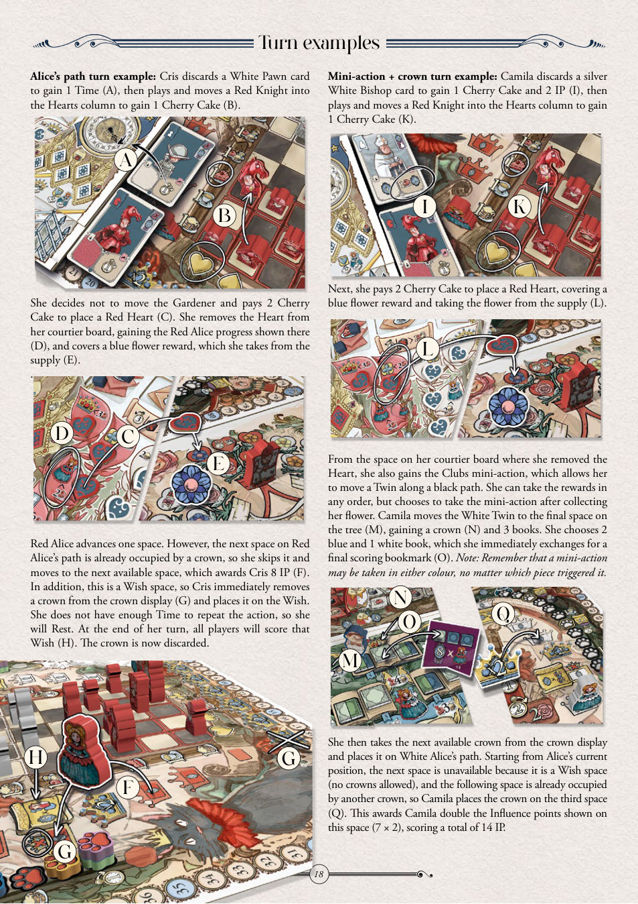
11单人模式与变体
11.1 单人模式 · 黛娜 p.20p.21p.22
对手是自动化的黛娜，按难度选定颜色（绿 简单 / 紫 普通 / 橙 困难 / 蓝 极难），使用其专属版图与 10 张黛娜卡。她不支付资源费用、不累积时间（每点时间按难度兑换 1 / 2 / 3 IP），终局亦不以书签判定，改为按难度给予每类收藏固定 IP。
| 步 | 黛娜的一个回合 |
|---|---|
| 1 | 翻开黛娜牌库顶卡。 |
| 2 | 以资源轨道上立方体所在的红/白列决定该卡打出红色或白色棋子，放置颜色标记立方体示意。 |
| 3 | 按优先级打出棋子：① 可俘获即俘获（取价值最高，并列时由你选定）→ ② 棋子在监狱即营救 → ③ 按卡上走法图从左上至右下选定第一个可行方向移动。车/象/后须移动至边界、俘获或被同色阻挡为止。 |
| 4 | 获得落格行的资源（百搭行给予茶）。 |
| 5 | 无视落格列，改为执行卡上印制的行动。 |
| 6 | 资源立方体在循环格 → 重复该行动；已打出 ≥6 张卡 → 洗弃牌堆重组牌库。 |
黛娜各棋子卡对应的具体行动、资源轨道移动规则、书签优先级与「耗尽（行动结算完毕或无法执行时抽新卡，只执行其行动、不移动棋子）」见 p.21–p.22；模糊情形（例如同时能俘王和后）由你决定。p.20
11.2 三种变体 p.28
- 隐藏目标：每人分发 1 张；带 ④ 记号的 2 张只在 4 人局加入，带 ③ 的只在 3 人局使用。多数授予标示颜色的 2 个皇冠（终局照常计分）；3 人专属卡按红白爱丽丝的距离给予 16 / 24 IP。
- 替代皇冠奖励：将 ×2 皇冠与迷你行动皇冠交替摆满陈列区，移除时始终从左到右；获得迷你行动皇冠时结算覆盖格分数 + 该迷你行动，也可选择改为获取双倍分数。
- 强化起始卡：每人抽 2 张强化卡、保留 1 张并将另 1 张传递至左手边玩家；再从起始牌库替换颜色和类型对应的 2 张基础卡，将 2 张强化卡洗入牌库。
对照原书页图：单人模式（p.20 / p.21）、车票卡（p.26）、变体所在页（p.27 符号表）
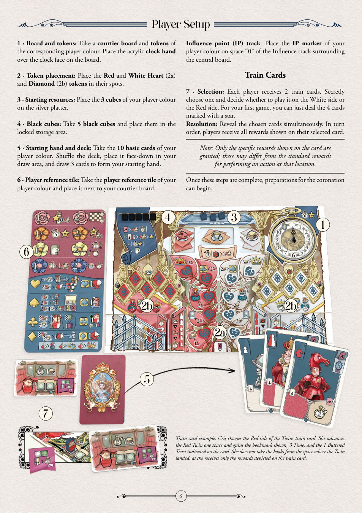
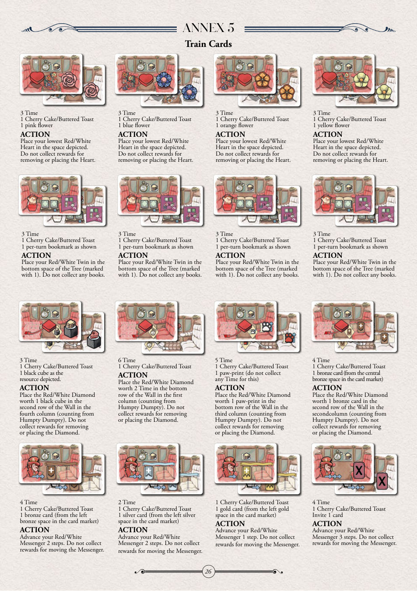
12速查表与页码索引
12.1 一页速查
12.2 术语对照（沿用中文版既定译法）
| 英文 | 中文 | 英文 | 中文 |
|---|---|---|---|
| Influence Points (IP) | 声望 | Invitation / Invite | 邀请 |
| Courtier board | 朝臣版图 | Hearts / Spades / Clubs / Diamonds | 红心 / 黑桃 / 梅花 / 方块 |
| Cherry Cake / Tea / Buttered Toast | 樱桃蛋糕 / 茶 / 黄油吐司 | Mini-action | 迷你行动 |
| Crown | 皇冠 | Wild action | 通用行动 |
| Alice's Wishes | 爱丽丝的心愿 | Rest | 休整（整理） |
| Cat tracks / paw-print | 猫咪轨道 / 爪印 | Bookmark | 书签 |
| Train cards | 车票卡 | Looking-glass token | 镜子标记 |
| Jail / respawn space | 监狱 / 重生格 | Throne space / platinum side | 王座格 / 白金面 |
12.3 章节 ↔ 原书页码
| 原书页 | 内容 | 章节 |
|---|---|---|
| p.2 | 简介、游戏目标 | §0 |
| p.3 | 配件一览 | §2 |
| p.4–5 | 公共设置、3 人局调整、起始玩家 | §1 |
| p.6 | 玩家设置、车票卡 | §1 / §11 |
| p.7 | 卡牌结构四要素、邀请 | §3.1 / §5.2 |
| p.8 | 中央版图、棋盘行列、爱丽丝路径、心愿格、王座格 | §2 / §3.2 / §6.1 |
| p.9 | 皇冠、猫咪轨道、卡牌市场费用 | §2 / §6.2 / §6.3 / §6.4 |
| p.10 | 朝臣版图、资源与时间、黑立方体替代 | §2 / §7 |
| p.11 | 回合结构、移动/俘获/营救/升变/跳过 | §3.4 / §4 |
| p.12 | 重复行动、休整四件事 | §4 |
| p.13 | 行动总则、费用/奖励配色、通用行动、迷你行动 | §3.3 / §5 / §7.5 |
| p.14 | ♥ 百花花园 | §5.1 |
| p.15 | ♠ 国王信使 | §5.2 |
| p.16 | ♣ 双子之树 | §5.3 |
| p.17 | ♦ 矮胖子之墙 | §5.4 |
| p.18 | 两个回合示例 | §10 |
| p.19 | 游戏结束、终局计分四步、完整算例 | §8 |
| p.20–22 | 单人模式黛娜（设置 / 回合 / 走法 / 计分） | §11.1 |
| p.22–27 | 附录 1 花 / 2 卡牌 / 3 书签 / 4 心愿 / 5 车票卡 / 6 符号表 | §6.5 / §7.4 / §11 / §12 |
| p.28 | 变体规则、制作人员 | §11.2 |
按规则结构重排，非官方规则书；规则裁决以英文原书为准。